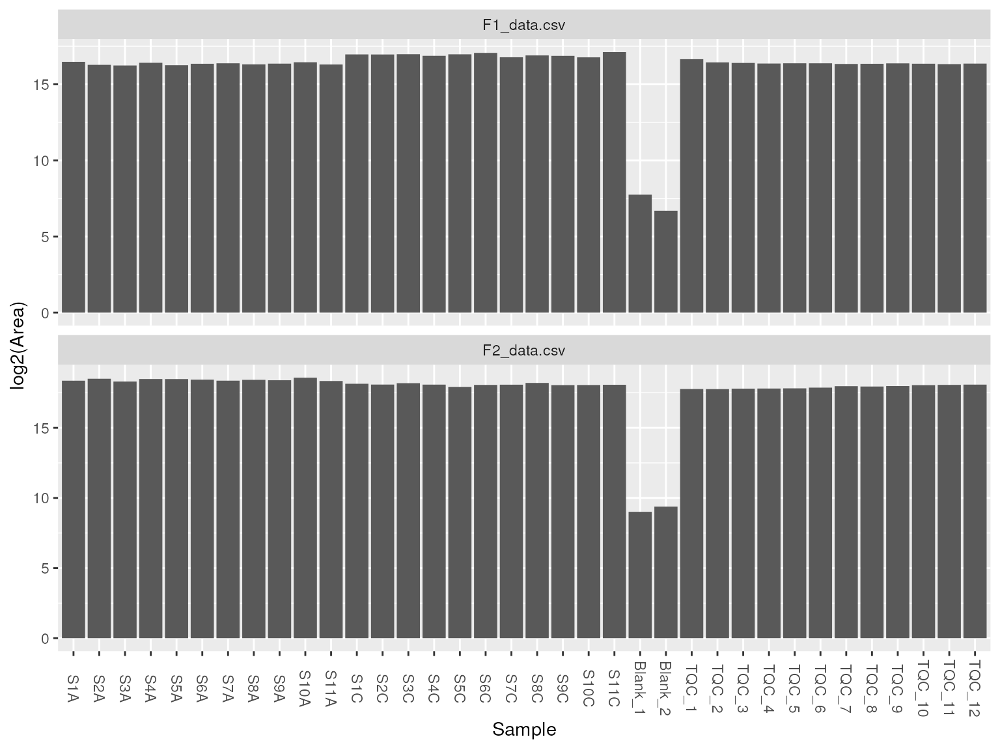
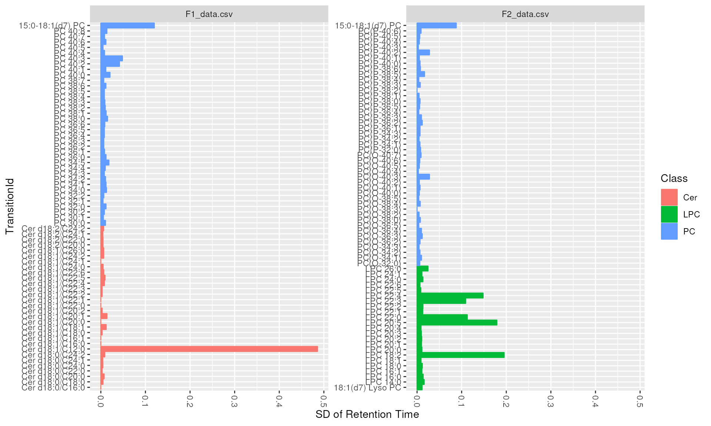
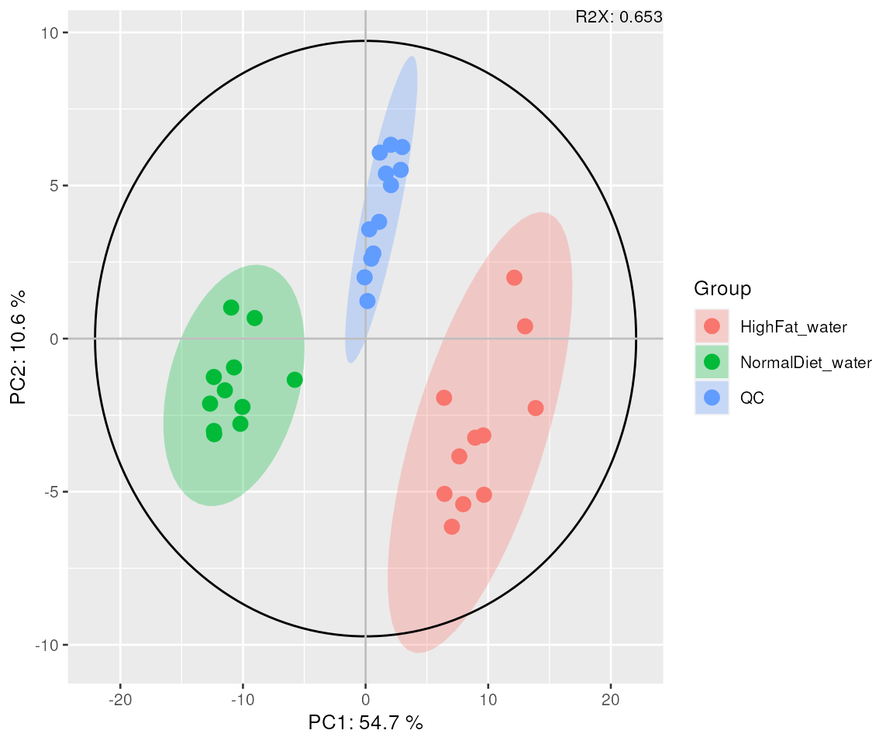
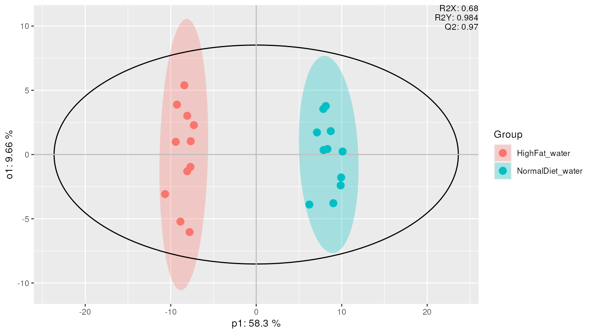
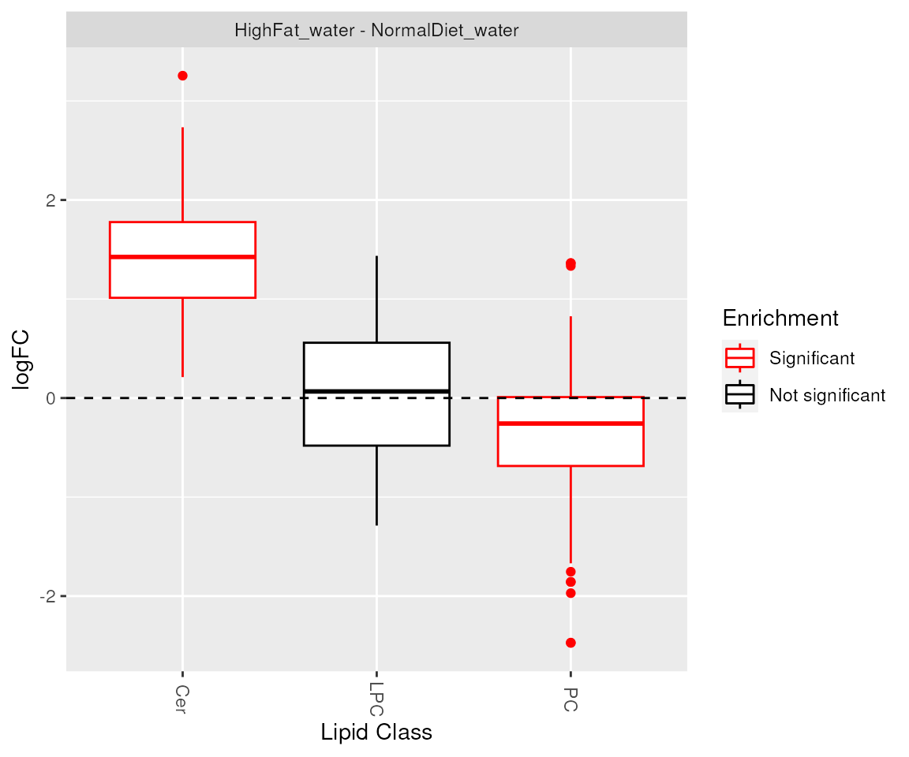
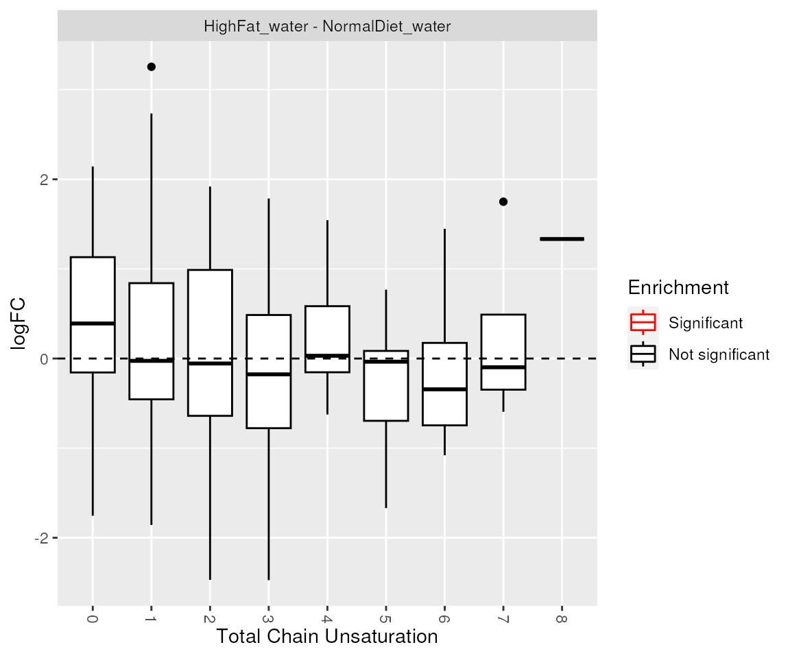

vignettes/workflow.Rmd
workflow.Rmdlipidr implements a series of functions to facilitate
inspection, analysis and visualization of targeted lipidomics datasets.
lipidr takes exported Skyline CSV as input, allowing for
multiple methods to be analyzed together.
lipidr represents Skyline files as SummarizedExperiment
objects, which can easily be integrated with a wide variety of
Bioconductor packages. Sample annotations, such as sample group or other
clinical information can be loaded.
lipidr generates various plots, such as PCA score plots
and box plots, for quality control of samples and measured lipids.
Normalization methods with and without internal standards are also
supported.
Differential analysis can be performed using any of the loaded clinical variables, which can be readily visualized as volcano plots. A novel lipid set enrichment analysis (LSEA) is implemented to detect preferential enrichment of certain lipid classes, total chain lengths or unsaturation patterns. Plots for the visualization of enrichment results are also implemented.
This vignette provides a step by step guide for downstream analysis of targeted lipidomics data, exported from Skyline.
In R console, type:
if (!requireNamespace("BiocManager", quietly=TRUE))
install.packages("BiocManager")
BiocManager::install("lipidr") In this workflow, we will use serum lipidomics data from mice fed a
normal or high-fat diet. Mice were fed a normal or high-fat diet
(Diet column) and had access to normal drinking water or
drinking water containing the bile acid deoxycholic acid
(BileAcid column). Lipid peaks were integrated using
Skyline and exported as CSV files.
Integrated peaks should be exported from each Skyline file through
File => Export => Report. Selecting
Transition Results ensures that necessary information is
exported from Skyline. Otherwise, you should ensure that peak
Area or Height or a similar measure is
exported. Regardless of the measure you choose for
intensity, you can use lipidr workflow.
Replicates should either be exported, or the
Pivot Replicate Name option must be used.
lipidr can read multiple CSV files from different
analysis methods together. Using our example dataset, three Skyline CSV
files are used as input to read.skyline.
datadir = system.file("extdata", package="lipidr")
filelist = list.files(datadir, "data.csv", full.names = TRUE) # all csv files
d = read_skyline(filelist)
print(d)## class: LipidomicsExperiment
## dim: 279 58
## metadata(2): summarized dimnames
## assays(3): Retention Time Area Background
## rownames(279): 1 2 ... 278 279
## rowData names(26): filename Molecule ... total_cs Class
## colnames(58): S1A S2A ... TQC_11 TQC_12
## colData names(0):Datasets are represented in R as SummarizedExperiments
to facilitate integration other Bioconductor packages.
Sample annotation can be prepared in Excel and saved as CSV. The table should have at least two columns, first indicating sample names and other columns indicating clinical variables.
clinical_file = system.file("extdata", "clin.csv", package="lipidr")
d = add_sample_annotation(d, clinical_file)
colData(d)## DataFrame with 58 rows and 3 columns
## group Diet BileAcid
## <character> <character> <character>
## S1A NormalDiet_water Normal water
## S2A NormalDiet_water Normal water
## S3A NormalDiet_water Normal water
## S4A NormalDiet_water Normal water
## S5A NormalDiet_water Normal water
## ... ... ... ...
## TQC_8 QC QC QC
## TQC_9 QC QC QC
## TQC_10 QC QC QC
## TQC_11 QC QC QC
## TQC_12 QC QC QCIt is helpful to imagine LipidomicsExperiment object as a table with
lipid molecules as rows and samples as columns. We can subset this table
by selecting specific rows and columns. The general syntax is
d[rows, cols].
In the example below we select the first 10 transitions and 10
samples. We can check the rowData and
colData.
d_subset = d[1:10, 1:10]
rowData(d_subset)## DataFrame with 10 rows and 26 columns
## filename Molecule Precursor.Mz Precursor.Charge Product.Mz
## <character> <character> <numeric> <integer> <numeric>
## 1 A1_data.csv PE 32:0 692.5 1 551.5
## 2 A1_data.csv PE 32:1 690.5 1 549.5
## 3 A1_data.csv PE 32:2 688.5 1 547.5
## 4 A1_data.csv PE 34:1 718.5 1 577.5
## 5 A1_data.csv PE 34:1 NEG 716.5 1 196.0
## 6 A1_data.csv PE 34:2 716.5 1 575.5
## 7 A1_data.csv PE 34:3 714.5 1 573.5
## 8 A1_data.csv PE 36:0 748.6 1 607.6
## 9 A1_data.csv PE 36:1 746.6 1 605.6
## 10 A1_data.csv PE 36:1 NEG 744.6 1 196.0
## Product.Charge clean_name ambig not_matched istd class_stub
## <integer> <factor> <logical> <logical> <logical> <character>
## 1 1 PE 32:0 FALSE FALSE FALSE PE
## 2 1 PE 32:1 FALSE FALSE FALSE PE
## 3 1 PE 32:2 FALSE FALSE FALSE PE
## 4 1 PE 34:1 FALSE FALSE FALSE PE
## 5 1 PE 34:1 FALSE FALSE FALSE PE
## 6 1 PE 34:2 FALSE FALSE FALSE PE
## 7 1 PE 34:3 FALSE FALSE FALSE PE
## 8 1 PE 36:0 FALSE FALSE FALSE PE
## 9 1 PE 36:1 FALSE FALSE FALSE PE
## 10 1 PE 36:1 FALSE FALSE FALSE PE
## chain1 l_1 s_1 chain2 l_2 s_2 chain3
## <character> <integer> <integer> <character> <integer> <integer> <character>
## 1 32:0 32 0 NA NA
## 2 32:1 32 1 NA NA
## 3 32:2 32 2 NA NA
## 4 34:1 34 1 NA NA
## 5 34:1 34 1 NA NA
## 6 34:2 34 2 NA NA
## 7 34:3 34 3 NA NA
## 8 36:0 36 0 NA NA
## 9 36:1 36 1 NA NA
## 10 36:1 36 1 NA NA
## l_3 s_3 chain4 l_4 s_4 total_cl total_cs
## <logical> <logical> <character> <logical> <logical> <integer> <integer>
## 1 NA NA NA NA 32 0
## 2 NA NA NA NA 32 1
## 3 NA NA NA NA 32 2
## 4 NA NA NA NA 34 1
## 5 NA NA NA NA 34 1
## 6 NA NA NA NA 34 2
## 7 NA NA NA NA 34 3
## 8 NA NA NA NA 36 0
## 9 NA NA NA NA 36 1
## 10 NA NA NA NA 36 1
## Class
## <character>
## 1 PE
## 2 PE
## 3 PE
## 4 PE
## 5 PE
## 6 PE
## 7 PE
## 8 PE
## 9 PE
## 10 PE
colData(d)## DataFrame with 58 rows and 3 columns
## group Diet BileAcid
## <character> <character> <character>
## S1A NormalDiet_water Normal water
## S2A NormalDiet_water Normal water
## S3A NormalDiet_water Normal water
## S4A NormalDiet_water Normal water
## S5A NormalDiet_water Normal water
## ... ... ... ...
## TQC_8 QC QC QC
## TQC_9 QC QC QC
## TQC_10 QC QC QC
## TQC_11 QC QC QC
## TQC_12 QC QC QCWe can also apply conditional selections (indexing). For example, we can select all quality control samples.
d_qc = d[, d$group == "QC"]
rowData(d_qc)## DataFrame with 279 rows and 26 columns
## filename Molecule Precursor.Mz Precursor.Charge Product.Mz
## <character> <character> <numeric> <integer> <numeric>
## 1 A1_data.csv PE 32:0 692.5 1 551.5
## 2 A1_data.csv PE 32:1 690.5 1 549.5
## 3 A1_data.csv PE 32:2 688.5 1 547.5
## 4 A1_data.csv PE 34:1 718.5 1 577.5
## 5 A1_data.csv PE 34:1 NEG 716.5 1 196.0
## ... ... ... ... ... ...
## 275 F2_data.csv PC(P-40:3) 824.600 1 184.10
## 276 F2_data.csv PC(P-40:4) 822.600 1 184.10
## 277 F2_data.csv PC(P-40:5) 820.600 1 184.10
## 278 F2_data.csv PC(P-40:6) 818.600 1 184.10
## 279 F2_data.csv 15:0-18:1(d7) PC 753.615 1 184.07
## Product.Charge clean_name ambig not_matched istd class_stub
## <integer> <factor> <logical> <logical> <logical> <character>
## 1 1 PE 32:0 FALSE FALSE FALSE PE
## 2 1 PE 32:1 FALSE FALSE FALSE PE
## 3 1 PE 32:2 FALSE FALSE FALSE PE
## 4 1 PE 34:1 FALSE FALSE FALSE PE
## 5 1 PE 34:1 FALSE FALSE FALSE PE
## ... ... ... ... ... ... ...
## 275 1 PCP-40:3 FALSE FALSE FALSE PCP
## 276 1 PCP-40:4 FALSE FALSE FALSE PCP
## 277 1 PCP-40:5 FALSE FALSE FALSE PCP
## 278 1 PCP-40:6 FALSE FALSE FALSE PCP
## 279 1 PC 15:0-18:1(d7) FALSE FALSE TRUE PC
## chain1 l_1 s_1 chain2 l_2 s_2 chain3
## <character> <integer> <integer> <character> <integer> <integer> <character>
## 1 32:0 32 0 NA NA
## 2 32:1 32 1 NA NA
## 3 32:2 32 2 NA NA
## 4 34:1 34 1 NA NA
## 5 34:1 34 1 NA NA
## ... ... ... ... ... ... ... ...
## 275 40:3 40 3 NA NA
## 276 40:4 40 4 NA NA
## 277 40:5 40 5 NA NA
## 278 40:6 40 6 NA NA
## 279 15:0 15 0 18:1 18 1
## l_3 s_3 chain4 l_4 s_4 total_cl total_cs
## <logical> <logical> <character> <logical> <logical> <integer> <integer>
## 1 NA NA NA NA 32 0
## 2 NA NA NA NA 32 1
## 3 NA NA NA NA 32 2
## 4 NA NA NA NA 34 1
## 5 NA NA NA NA 34 1
## ... ... ... ... ... ... ... ...
## 275 NA NA NA NA 40 3
## 276 NA NA NA NA 40 4
## 277 NA NA NA NA 40 5
## 278 NA NA NA NA 40 6
## 279 NA NA NA NA 33 1
## Class
## <character>
## 1 PE
## 2 PE
## 3 PE
## 4 PE
## 5 PE
## ... ...
## 275 PC
## 276 PC
## 277 PC
## 278 PC
## 279 PC
colData(d_qc)## DataFrame with 12 rows and 3 columns
## group Diet BileAcid
## <character> <character> <character>
## TQC_1 QC QC QC
## TQC_2 QC QC QC
## TQC_3 QC QC QC
## TQC_4 QC QC QC
## TQC_5 QC QC QC
## ... ... ... ...
## TQC_8 QC QC QC
## TQC_9 QC QC QC
## TQC_10 QC QC QC
## TQC_11 QC QC QC
## TQC_12 QC QC QCNote that we leave rows index empty (d[,cols]) to select
all lipids. We can also subset based on lipid annotations, selecting a
specific class for example.
## DataFrame with 82 rows and 26 columns
## filename Molecule Precursor.Mz Precursor.Charge Product.Mz
## <character> <character> <numeric> <integer> <numeric>
## 160 F1_data.csv PC 30:0 706.5 1 184.1
## 161 F1_data.csv PC 30:1 704.5 1 184.1
## 162 F1_data.csv PC 30:2 702.5 1 184.1
## 163 F1_data.csv PC 32:0 734.6 1 184.1
## 164 F1_data.csv PC 32:1 732.6 1 184.1
## ... ... ... ... ... ...
## 275 F2_data.csv PC(P-40:3) 824.600 1 184.10
## 276 F2_data.csv PC(P-40:4) 822.600 1 184.10
## 277 F2_data.csv PC(P-40:5) 820.600 1 184.10
## 278 F2_data.csv PC(P-40:6) 818.600 1 184.10
## 279 F2_data.csv 15:0-18:1(d7) PC 753.615 1 184.07
## Product.Charge clean_name ambig not_matched istd class_stub
## <integer> <factor> <logical> <logical> <logical> <character>
## 160 1 PC 30:0 FALSE FALSE FALSE PC
## 161 1 PC 30:1 FALSE FALSE FALSE PC
## 162 1 PC 30:2 FALSE FALSE FALSE PC
## 163 1 PC 32:0 FALSE FALSE FALSE PC
## 164 1 PC 32:1 FALSE FALSE FALSE PC
## ... ... ... ... ... ... ...
## 275 1 PCP-40:3 FALSE FALSE FALSE PCP
## 276 1 PCP-40:4 FALSE FALSE FALSE PCP
## 277 1 PCP-40:5 FALSE FALSE FALSE PCP
## 278 1 PCP-40:6 FALSE FALSE FALSE PCP
## 279 1 PC 15:0-18:1(d7) FALSE FALSE TRUE PC
## chain1 l_1 s_1 chain2 l_2 s_2 chain3
## <character> <integer> <integer> <character> <integer> <integer> <character>
## 160 30:0 30 0 NA NA
## 161 30:1 30 1 NA NA
## 162 30:2 30 2 NA NA
## 163 32:0 32 0 NA NA
## 164 32:1 32 1 NA NA
## ... ... ... ... ... ... ... ...
## 275 40:3 40 3 NA NA
## 276 40:4 40 4 NA NA
## 277 40:5 40 5 NA NA
## 278 40:6 40 6 NA NA
## 279 15:0 15 0 18:1 18 1
## l_3 s_3 chain4 l_4 s_4 total_cl total_cs
## <logical> <logical> <character> <logical> <logical> <integer> <integer>
## 160 NA NA NA NA 30 0
## 161 NA NA NA NA 30 1
## 162 NA NA NA NA 30 2
## 163 NA NA NA NA 32 0
## 164 NA NA NA NA 32 1
## ... ... ... ... ... ... ... ...
## 275 NA NA NA NA 40 3
## 276 NA NA NA NA 40 4
## 277 NA NA NA NA 40 5
## 278 NA NA NA NA 40 6
## 279 NA NA NA NA 33 1
## Class
## <character>
## 160 PC
## 161 PC
## 162 PC
## 163 PC
## 164 PC
## ... ...
## 275 PC
## 276 PC
## 277 PC
## 278 PC
## 279 PC
colData(d_pc)## DataFrame with 58 rows and 3 columns
## group Diet BileAcid
## <character> <character> <character>
## S1A NormalDiet_water Normal water
## S2A NormalDiet_water Normal water
## S3A NormalDiet_water Normal water
## S4A NormalDiet_water Normal water
## S5A NormalDiet_water Normal water
## ... ... ... ...
## TQC_8 QC QC QC
## TQC_9 QC QC QC
## TQC_10 QC QC QC
## TQC_11 QC QC QC
## TQC_12 QC QC QCFor demonstration purposes, we select only 3 lipids classes,
Ceramides (Cer), PhosphatidylCholines (PC) and
LysoPhosphatidylCholines (LPC). We also
BileAcid treated group from our dataset.
To ensure data quality, we can look at total lipid intensity as bar chart or distribution of samples as a boxplot.
plot_samples(d, type = "tic", log = TRUE)
We can also look at intensity and retention time distributions for
each lipid molecule using plot_molecules(type = boxplot).
It is recommended to assess the variation across quality control
samples.
plot_molecules(d_qc, "sd", measure = "Retention Time", log = FALSE)
plot_molecules(d_qc, "cv", measure = "Area")Or intensity distribution within different lipid classes.
plot_lipidclass(d, "boxplot")All lipidr plots can be displayed interactive mode if
plotly package is installed. Plot interactivity is disabled
by default. To enable interactivity, simple call
use_interactive_graphics(). You can turn interactivity back
off by use_interactive_graphics(interactive=FALSE).
This step is important when more than one transition is measured per lipid molecule. Multiple transitions are summarized into a single value by either taking the average intensity or the one with highest intensity.
d_summarized = summarize_transitions(d, method = "average")The PQN method determines a dilution factor for each sample by comparing the distribution of quotients between samples and a reference spectrum, followed by sample normalization using this dilution factor.
d_normalized = normalize_pqn(d_summarized, measure = "Area", exclude = "blank", log = TRUE)
plot_samples(d_normalized, "boxplot")By specifying exclude = "blank", blank runs are
automatically detected and excluded from the normalization process.
Internal standard normalization corrects lipid class-specific variations between samples. Lipid classes are normalized using corresponding internal standard(s) of the same lipid class. If no corresponding internal standard is found the average of all measured internal standards is used instead.
d_normalized_istd = normalize_istd(d_summarized, measure = "Area", exclude = "blank", log = TRUE)You can investigate sample variation using either PCA or PCoA (classical MDS).
mvaresults = mva(d_normalized, measure="Area", method="PCA")
plot_mva(mvaresults, color_by="group", components = c(1,2))
Plotting other components is possible by specifying
components argument. For example
components = c(2,3) plots second and third components.
Supervised multivariate analyses, such as OPLS and OPLS-DA can be performed to determine which lipids are associated with a group (y-variable) of interest. In this example we use “Diet†as grouping, and display the results in a scores plot.
mvaresults = mva(d_normalized, method = "OPLS-DA", group_col = "Diet", groups=c("HighFat", "Normal"))
plot_mva(mvaresults, color_by="group")
We can also plot the loadings and display important lipids contributing to the separation between different (Diet) groups.
plot_mva_loadings(mvaresults, color_by="Class", top.n=10)Alternatively, we can extract top N lipids along with their annotations.
top_lipids(mvaresults, top.n=10)## filename Molecule Precursor.Mz Precursor.Charge clean_name
## 1 F1_data.csv Cer d18:1/C18:0 566.7 1 Cer 18:1/18:0
## 2 F1_data.csv Cer d18:0/C20:0 596.7 1 Cer 18:0/20:0
## 3 F1_data.csv Cer d18:1/C20:0 594.7 1 Cer 18:1/20:0
## 4 F1_data.csv Cer d18:1/C16:0 538.7 1 Cer 18:1/16:0
## 5 F1_data.csv Cer d18:1/C20:1 592.7 1 Cer 18:1/20:1
## 6 F2_data.csv PC(P-36:5) 764.6 1 PCP-36:5
## 7 F2_data.csv PC(O-40:1) 830.6 1 PCO-40:1
## 8 F2_data.csv PC(P-40:0) 830.6 1 PCP-40:0
## 9 F1_data.csv Cer d18:1/C22:3 616.7 1 Cer 18:1/22:3
## 10 F1_data.csv Cer d18:1/C20:2 590.7 1 Cer 18:1/20:2
## ambig not_matched istd class_stub chain1 l_1 s_1 chain2 l_2 s_2 chain3 l_3
## 1 FALSE FALSE FALSE Cer 18:1 18 1 18:0 18 0 NA
## 2 FALSE FALSE FALSE Cer 18:0 18 0 20:0 20 0 NA
## 3 FALSE FALSE FALSE Cer 18:1 18 1 20:0 20 0 NA
## 4 FALSE FALSE FALSE Cer 18:1 18 1 16:0 16 0 NA
## 5 FALSE FALSE FALSE Cer 18:1 18 1 20:1 20 1 NA
## 6 FALSE FALSE FALSE PCP 36:5 36 5 NA NA NA
## 7 FALSE FALSE FALSE PCO 40:1 40 1 NA NA NA
## 8 FALSE FALSE FALSE PCP 40:0 40 0 NA NA NA
## 9 FALSE FALSE FALSE Cer 18:1 18 1 22:3 22 3 NA
## 10 FALSE FALSE FALSE Cer 18:1 18 1 20:2 20 2 NA
## s_3 chain4 l_4 s_4 total_cl total_cs Class molrank
## 1 NA NA NA 36 1 Cer 1.0
## 2 NA NA NA 38 0 Cer 2.0
## 3 NA NA NA 38 1 Cer 3.0
## 4 NA NA NA 34 1 Cer 4.0
## 5 NA NA NA 38 2 Cer 5.0
## 6 NA NA NA 36 5 PC 6.0
## 7 NA NA NA 40 1 PC 7.5
## 8 NA NA NA 40 0 PC 7.5
## 9 NA NA NA 40 4 Cer 9.0
## 10 NA NA NA 38 3 Cer 10.0This step of the workflow requires the limma package to
be installed.
Normalized and log transformed data should be used.
de_results = de_analysis(
data=d_normalized,
HighFat_water - NormalDiet_water,
measure="Area"
)
head(de_results)## Molecule Class total_cl total_cs istd MoleculeId
## 1 Cer d18:0/C16:0 Cer 34 0 FALSE 1
## 2 Cer d18:0/C18:0 Cer 36 0 FALSE 2
## 3 Cer d18:0/C20:0 Cer 38 0 FALSE 3
## 4 Cer d18:0/C22:0 Cer 40 0 FALSE 4
## 5 Cer d18:0/C24:0 Cer 42 0 FALSE 5
## 6 Cer d18:0/C24:1 Cer 42 1 FALSE 6
## contrast logFC AveExpr t P.Value
## 1 HighFat_water - NormalDiet_water 1.699691 11.957712 9.884937 1.823247e-10
## 2 HighFat_water - NormalDiet_water 2.143217 10.376157 14.761687 1.902992e-14
## 3 HighFat_water - NormalDiet_water 1.997993 9.825952 21.336335 1.976278e-18
## 4 HighFat_water - NormalDiet_water 1.390828 12.497122 12.851894 5.102948e-13
## 5 HighFat_water - NormalDiet_water 1.081816 11.884280 9.303129 6.547053e-10
## 6 HighFat_water - NormalDiet_water 1.356113 12.054596 11.452936 7.184205e-12
## adj.P.Val B
## 1 6.003375e-10 13.57936
## 2 1.417631e-13 22.91345
## 3 1.362707e-16 32.17804
## 4 2.460350e-12 19.56839
## 5 1.733044e-09 12.27716
## 6 2.852552e-11 16.87467
significant_molecules(de_results)## $`HighFat_water - NormalDiet_water`
## [1] Cer d18:0/C16:0 Cer d18:0/C18:0 Cer d18:0/C20:0 Cer d18:0/C22:0
## [5] Cer d18:0/C24:0 Cer d18:0/C24:1 Cer d18:1/C16:0 Cer d18:1/C16:1
## [9] Cer d18:1/C18:0 Cer d18:1/C18:1 Cer d18:1/C20:0 Cer d18:1/C20:1
## [13] Cer d18:1/C20:2 Cer d18:1/C22:0 Cer d18:1/C22:1 Cer d18:1/C22:2
## [17] Cer d18:1/C22:3 Cer d18:1/C22:5 Cer d18:1/C22:6 Cer d18:1/C24:1
## [21] Cer d18:1/C26:0 Cer d18:2/C20:0 PC 36:5 PC 36:6
## [25] PC 40:2 PC 40:3 PC 40:8 LPC 20:0
## [29] LPC 20:4 LPC 22:0 LPC 26:0 PC(O-34:2)
## [33] PC(O-34:3) PC(O-38:2) PC(O-40:1) PC(P-34:1)
## [37] PC(P-34:2) PC(P-34:3) PC(P-36:5) PC(P-38:0)
## [41] PC(P-38:1) PC(P-40:0)
## 134 Levels: Cer d18:0/C16:0 Cer d18:0/C18:0 Cer d18:0/C20:0 ... PC(P-40:6)We can visualize differential analysis results using volcano plots. In this instance we turn off labeling, due to the large number of significantly altered lipids between conditions.
plot_results_volcano(de_results, show.labels = FALSE)For more complex experimental designs, where one might deal with
factor adjustment or interactions, it is recommended to use the
de_design function. Users can either provide a design
matrix, or a formula to create one.
# Using formula
de_design(
data=d_normalized,
design = ~ group,
coef="groupHighFat_water",
measure="Area")
# Using design matrix
design = model.matrix(~ group, data=colData(d_normalized))
de_design(
data=d_normalized,
design = design,
coef="groupHighFat_water",
measure="Area")For more details on creating design matrices for different experimental designs, refer to (Limma User Guide)[https://www.bioconductor.org/packages/devel/bioc/vignettes/limma/inst/doc/usersguide.pdf] and (edgeR tutorial)[https://www.bioconductor.org/packages/devel/bioc/vignettes/edgeR/inst/doc/edgeRUsersGuide.pdf].
lipidr automatically generates sets of lipids based on
lipid class, total chain length and unsaturation. Measured lipids are
then ranked by their fold change, or p-value using results from
differential analysis.
enrich_results = lsea(de_results, rank.by = "logFC")
significant_lipidsets(enrich_results)## $`HighFat_water - NormalDiet_water`
## [1] "Class_Cer" "Class_PC"Visualization of enrichment analysis results. The enriched lipid classes and chain unsaturations are highlighted.
plot_enrichment(de_results, significant_lipidsets(enrich_results), annotation="class")
plot_enrichment(de_results, significant_lipidsets(enrich_results), annotation="unsat")
lipidr can also plot fold changes of lipids per class
showing total chain lengths and unsaturations. Number on the plot
indicate multiple lipids measured with the same chain properties.
plot_chain_distribution(de_results)## R version 4.3.0 (2023-04-21)
## Platform: x86_64-pc-linux-gnu (64-bit)
## Running under: Ubuntu 22.04.2 LTS
##
## Matrix products: default
## BLAS: /usr/lib/x86_64-linux-gnu/openblas-pthread/libblas.so.3
## LAPACK: /usr/lib/x86_64-linux-gnu/openblas-pthread/libopenblasp-r0.3.20.so; LAPACK version 3.10.0
##
## locale:
## [1] LC_CTYPE=en_US.UTF-8 LC_NUMERIC=C
## [3] LC_TIME=en_US.UTF-8 LC_COLLATE=en_US.UTF-8
## [5] LC_MONETARY=en_US.UTF-8 LC_MESSAGES=en_US.UTF-8
## [7] LC_PAPER=en_US.UTF-8 LC_NAME=C
## [9] LC_ADDRESS=C LC_TELEPHONE=C
## [11] LC_MEASUREMENT=en_US.UTF-8 LC_IDENTIFICATION=C
##
## time zone: UTC
## tzcode source: system (glibc)
##
## attached base packages:
## [1] stats4 stats graphics grDevices utils datasets methods
## [8] base
##
## other attached packages:
## [1] ggplot2_3.4.2 lipidr_2.15.1
## [3] SummarizedExperiment_1.31.1 Biobase_2.61.0
## [5] GenomicRanges_1.53.1 GenomeInfoDb_1.37.1
## [7] IRanges_2.35.1 S4Vectors_0.39.1
## [9] BiocGenerics_0.47.0 MatrixGenerics_1.13.0
## [11] matrixStats_1.0.0
##
## loaded via a namespace (and not attached):
## [1] tidyselect_1.2.0 dplyr_1.1.2
## [3] farver_2.1.1 bitops_1.0-7
## [5] fastmap_1.1.1 RCurl_1.98-1.12
## [7] digest_0.6.31 lifecycle_1.0.3
## [9] magrittr_2.0.3 compiler_4.3.0
## [11] rlang_1.1.1 sass_0.4.6
## [13] tools_4.3.0 utf8_1.2.3
## [15] yaml_2.3.7 calibrate_1.7.7
## [17] data.table_1.14.8 knitr_1.43
## [19] S4Arrays_1.1.4 labeling_0.4.2
## [21] DelayedArray_0.27.4 ropls_1.33.0
## [23] BiocParallel_1.35.2 norm_1.0-11.0
## [25] withr_2.5.0 purrr_1.0.1
## [27] desc_1.4.2 grid_4.3.0
## [29] fansi_1.0.4 colorspace_2.1-0
## [31] scales_1.2.1 MASS_7.3-60
## [33] MultiAssayExperiment_1.27.0 cli_3.6.1
## [35] mvtnorm_1.2-1 tmvtnorm_1.5
## [37] rmarkdown_2.22 crayon_1.5.2
## [39] ragg_1.2.5 generics_0.1.3
## [41] cachem_1.0.8 stringr_1.5.0
## [43] zlibbioc_1.47.0 parallel_4.3.0
## [45] impute_1.75.1 XVector_0.41.1
## [47] vctrs_0.6.2 Matrix_1.5-4.1
## [49] sandwich_3.0-2 jsonlite_1.8.5
## [51] imputeLCMD_2.1 qqman_0.1.8
## [53] systemfonts_1.0.4 limma_3.57.2
## [55] jquerylib_0.1.4 tidyr_1.3.0
## [57] MultiDataSet_1.29.0 glue_1.6.2
## [59] pkgdown_2.0.7 codetools_0.2-19
## [61] cowplot_1.1.1 stringi_1.7.12
## [63] gmm_1.8 gtable_0.3.3
## [65] munsell_0.5.0 tibble_3.2.1
## [67] pillar_1.9.0 pcaMethods_1.93.0
## [69] htmltools_0.5.5 fgsea_1.27.0
## [71] GenomeInfoDbData_1.2.10 R6_2.5.1
## [73] textshaping_0.3.6 rprojroot_2.0.3
## [75] evaluate_0.21 lattice_0.21-8
## [77] highr_0.10 memoise_2.0.1
## [79] bslib_0.4.2 fastmatch_1.1-3
## [81] Rcpp_1.0.10 SparseArray_1.1.9
## [83] xfun_0.39 fs_1.6.2
## [85] zoo_1.8-12 forcats_1.0.0
## [87] pkgconfig_2.0.3